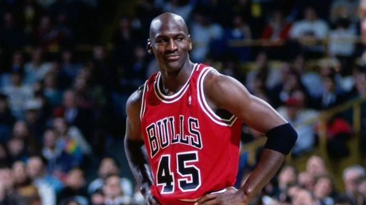

Michael Jordan:
Michael Jeffrey Jordan es un exjugador de baloncesto estadounidense.
Con 1,98 metros de altura, jugaba en la posición de escolta.
Es considerado por la mayoría de aficionados y especialistas como el mejor jugador de baloncesto de todos los tiempos.
